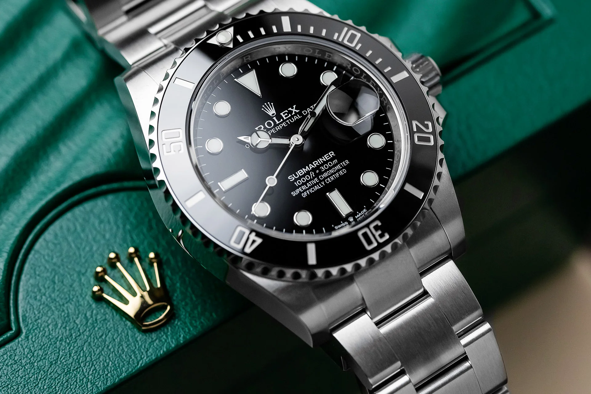
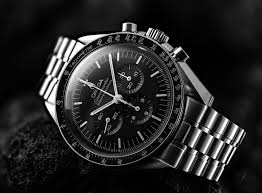
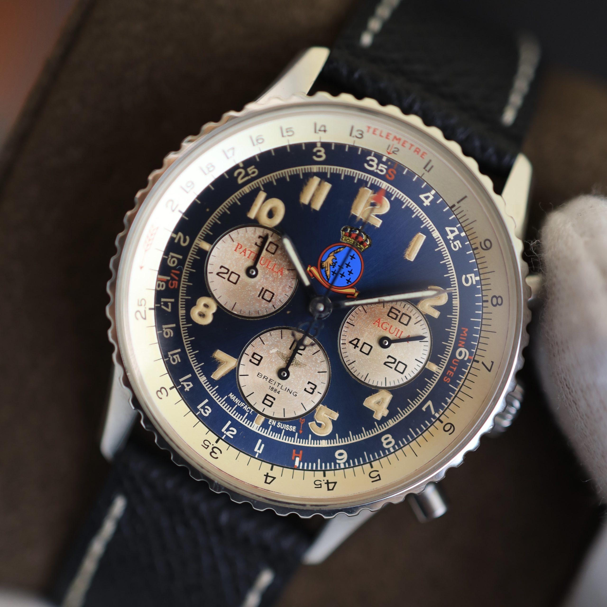
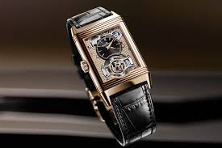
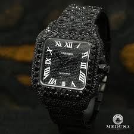
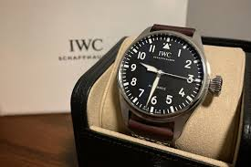

Rolex

Rolex watches are renowned for their exceptional craftsmanship, durability, and precision. They feature the iconic Oyster Case, which provides superior water resistance and protection. The Perpetual Movement ensures automatic self-winding for continuous and reliable performance. A signature Cyclops Lens magnifies the date display for better readability. Rolex uses premium materials like Oystersteel, 18K gold, and Cerachrom ceramic for unmatched quality. Each timepiece is a certified Superlative Chronometer, guaranteeing extraordinary accuracy. Luminous displays in models like the Submariner and GMT-Master II enhance visibility in low-light conditions. With a perfect blend of innovation and timeless elegance, Rolex remains a symbol of prestige and excellence.
Omega

Omega watches are renowned for their Master Chronometer certification, ensuring extreme precision and resistance to 15,000 gauss magnetic fields. They feature the Co-Axial escapement, reducing friction for enhanced accuracy and longevity. Built with sapphire crystal, stainless steel, titanium, or ceramic, they offer durability and luxury. Models like the Seamaster provide water resistance up to 600m, with helium escape valves for professional divers. The Speedmaster Moonwatch was the first watch worn on the Moon and remains NASA-certified. Omega's in-house movements include silicon balance springs for superior performance. The Super-LumiNova coating ensures visibility in low-light conditions. As the official timekeeper of the Olympics, Omega watches are a blend of heritage, innovation, and prestige
patek philippe

Patek Philippe watches are renowned for their luxury, precision, and craftsmanship. Each timepiece showcases intricate mechanics and elegant designs. The brand is famous for its perpetual calendars and minute repeaters. Collectors value Patek Philippe for its timeless heritage. Owning one symbolizes sophistication and status. The watches are handcrafted with exquisite attention to detail. Patek Philippe combines innovation with traditional Swiss watchmaking. Every model reflects elegance, exclusivity, and prestige. Their value often appreciates over time, making them a prized investment. With a legacy dating back to 1839, the brand remains a leader in haute horology. Every watch undergoes rigorous testing to ensure unparalleled accuracy. Patek Philippe’s commitment to excellence continues to set the benchmark for luxury timepieces.
varcheron constantin

Vacheron Constantin is one of the oldest Swiss watchmakers, founded in 1755. It is known for its exquisite craftsmanship and timeless elegance. The brand specializes in highly complicated mechanical movements. Vacheron Constantin’s watches feature artistic engravings and intricate skeletonized designs. It is famous for the Overseas, Patrimony, and Traditionnelle collections. Each timepiece undergoes rigorous quality control and hand-finishing. The brand holds the Geneva Seal, ensuring exceptional standards. Vacheron Constantin blends innovation with centuries-old watchmaking tradition. Its watches are highly sought after by collectors and connoisseurs. Limited editions and bespoke creations make each watch a masterpiece. The brand’s commitment to excellence has shaped haute horology for centuries.
Breitling

Breitling watches are known for their precision, durability, and aviation-inspired designs. They feature chronometer-certified movements for exceptional accuracy and reliability. The brand is famous for its Navitimer, Superocean, and Avenger collections. Many models include slide rule bezels for complex calculations. Breitling uses high-quality materials like stainless steel, titanium, and ceramic. Their timepieces offer water resistance up to 300 meters or more. Luminescent hands and markers ensure visibility in low light conditions. Breitling combines Swiss craftsmanship with modern innovation for professional-grade watches. The brand remains a favorite among pilots, divers, adventurers, and watch enthusiasts. Its bold designs and rugged construction make it a symbol of adventure, excellence, and timeless elegance.
AudemarsPiguet

Audemars Piguet watches are renowned for their luxury, innovation, and fine Swiss craftsmanship. The brand is famous for introducing the Royal Oak, the first luxury sports watch in stainless steel. Their timepieces feature intricate complications such as perpetual calendars, minute repeaters, and tourbillons. Audemars Piguet uses high-quality materials like titanium, gold, platinum, and ceramic. The brand’s in-house calibers ensure precision, durability, and outstanding performance. Iconic designs with hand-finished details reflect a perfect blend of tradition and modernity. Many models feature the signature octagonal bezel with exposed screws for a distinctive look. Their watches undergo meticulous finishing techniques, including beveling, polishing, and brushing. The brand’s commitment to innovation and artistry has made it a leader in horology.
Jaeger-LeCoultre

Jaeger-LeCoultre watches are known for their precision, innovation, and exceptional craftsmanship. The brand is recognized for creating high-complication timepieces, including perpetual calendars, tourbillons, and minute repeaters. Jaeger-LeCoultre’s watches often feature the signature Reverso model, known for its flip-case design. Their timepieces are powered by in-house calibers, ensuring superior performance and accuracy. The brand uses premium materials such as stainless steel, gold, and ceramic for durable and luxurious designs. Jaeger-LeCoultre is renowned for its intricate movements, often featuring multiple functions in a single watch. The brand’s commitment to innovation and tradition has made it a prominent name in horology. Each timepiece reflects meticulous attention to detail and timeless elegance.
Cartier

Cartier watches are synonymous with luxury, elegance, and timeless design. The brand is famous for its iconic collections such as the Tank, Santos, and Ballon Bleu. Cartier timepieces feature precise Swiss movements, often powered by in-house calibers. Their designs blend classic style with modern innovation, using materials like gold, platinum, stainless steel, and diamonds. Cartier is known for its attention to detail, with meticulously crafted dials and hand-finished cases. Many models feature distinctive elements like Roman numerals and blue steel hands for a signature look. The brand is renowned for its commitment to both aesthetics and functionality. Cartier watches remain a symbol of prestige, sophistication, and refinement. They are highly sought after by collectors and watch enthusiasts worldwide.
IWC

IWC watches are renowned for their precision, engineering, and timeless designs. The brand is known for its iconic collections such as the Pilot’s Watch, Portugieser, and Big Pilot. IWC timepieces feature high-quality Swiss movements, often powered by in-house calibers for superior performance. The brand uses durable materials like stainless steel, titanium, gold, and ceramic to ensure both luxury and longevity. IWC is famous for its aviation-inspired designs, with many watches equipped with chronographs and large, legible dials. The brand also incorporates innovative features such as perpetual calendars, moon phases, and minute repeaters. IWC combines traditional craftsmanship with cutting-edge technology, ensuring precision in every timepiece. Their watches are a symbol of sophistication, style, and precision, admired by collectors and enthusiasts.
TAG Heuer

TAG Heuer watches are known for their precision, innovation, and strong motorsport heritage. The brand is famous for its iconic collections, such as the Monaco, Carrera, and Aquaracer. TAG Heuer timepieces feature Swiss-made automatic and quartz movements, offering exceptional performance and accuracy. The brand uses high-quality materials like stainless steel, titanium, ceramic, and carbon to ensure durability and a sleek look. TAG Heuer watches are often designed with chronographs, tachymeters, and other sporty features, making them popular among athletes and racing enthusiasts. The brand is committed to innovation, incorporating cutting-edge technologies like advanced watchmaking techniques and smart features. TAG Heuer combines elegance with a dynamic, active lifestyle, making their timepieces both functional and stylish.
About Us
Welcome to Best Luxury Watch Brands, a website dedicated to showcasing the finest timepieces from the world's most prestigious watchmakers. This website was created using only HTML and CSS as part of a learning experience to explore web development while sharing insights about luxury watch brands. Here, you'll find information about iconic brands, their history, craftsmanship, and what makes them stand out in the world of horology. From timeless classics to modern innovations, luxury watches represent more than just timekeeping—they embody elegance, precision, and artistry. Each brand has a unique legacy, blending traditional techniques with cutting-edge technology. Whether it's Swiss mastery or bold contemporary designs, every watch tells a story of passion and excellence. Whether you're a watch enthusiast or just curious about high-end timepieces, this site aims to provide a simple yet informative experience. Thank you for visiting! ⌚✨
Conduct
+91 9488715046 | avins2005@gmail.com
Boys Hostel, St.Joseph's Institute of Technology, Chennai